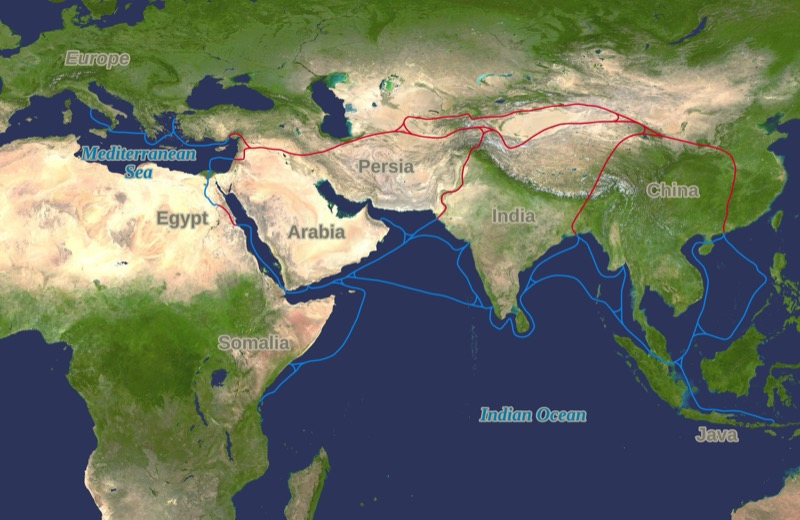

~1600 P.N.E. – 220 N.E. • CARSTVO U SRCU AZIJE
Dok su Grci izmišljali demokratiju i Rimljani pravili puteve, Kina je gradila nešto drugačije — trajnost. Dinastije su dolazile i odlazile, ali ideja carstva ostajala je. Kina je dala svetu papir, kompas, barut i štampu — sve četiri pre Evrope za više od hiljadu godina. I sve to iz civilizacije koja se razvijala gotovo potpuno izolovano od ostatka sveta, po sopstvenim pravilima i sopstvenom ritmu.

Kina u doba Dinastije Han (~2. vek p.n.e.) — granice carstva i Put svile • Wikimedia Commons